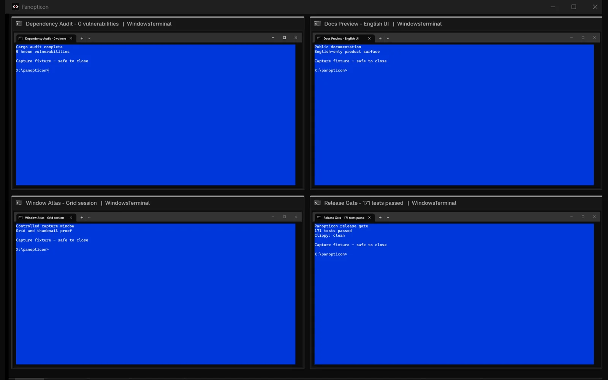
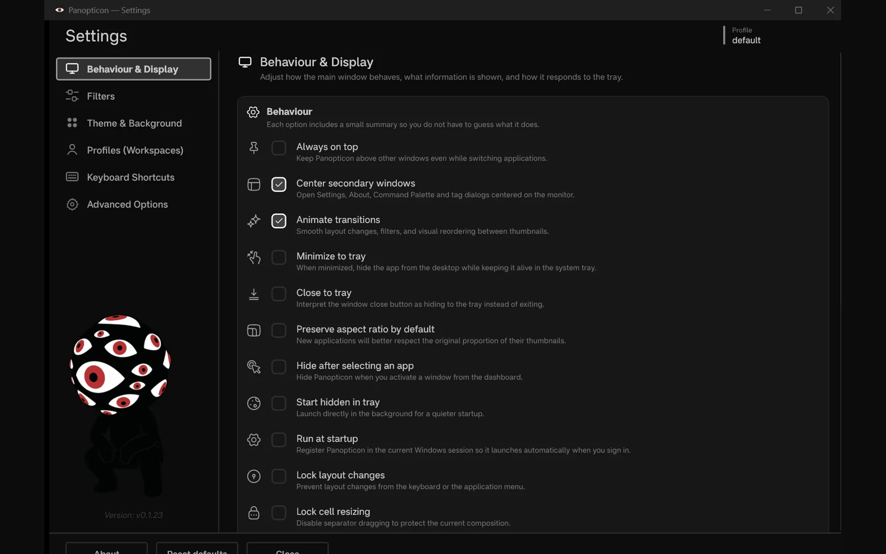
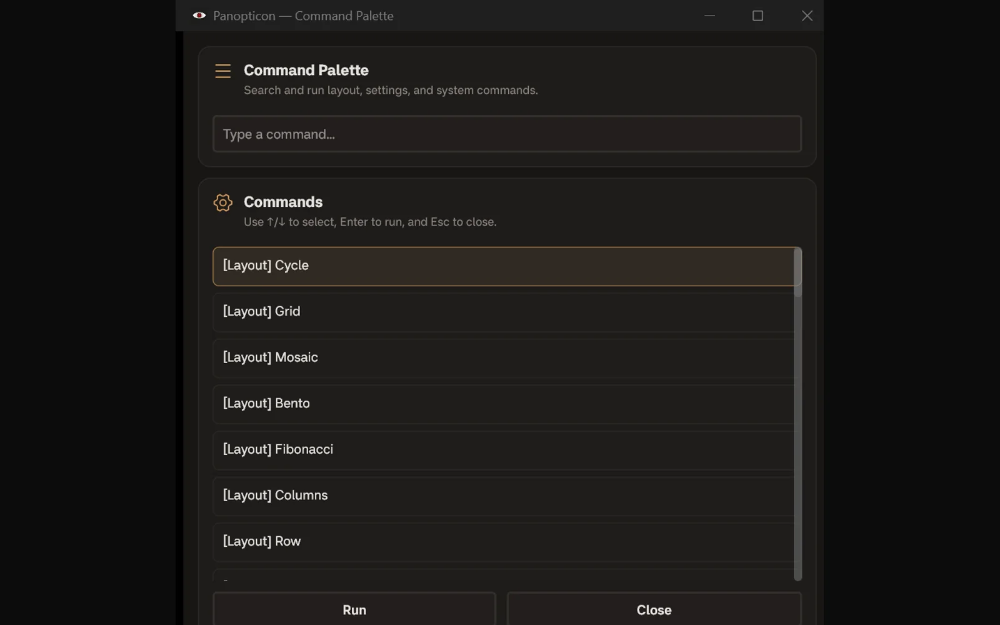

01
Filter the noise
Limit the dashboard by monitor, application, tag, or group. Hide a window without closing it.
Windows / Rust / live DWM
Panopticon turns open windows into one live, filterable control room. Scan the grid, switch layouts, group work, and activate the window you need.
Observed runtime
Panopticon reads real DWM surfaces. These four windows are disposable capture fixtures, filtered from an isolated workspace.

Change the geometry
01
Limit the dashboard by monitor, application, tag, or group. Hide a window without closing it.
02
Remember per-app visibility, aspect ratio, color, tags, position, and refresh strategy in local TOML.
03
Open the command palette, cycle layouts, refresh, or summon Panopticon with configurable shortcuts.
The control surface


Local by design
Panopticon uses the Windows compositor, local TOML settings, and bounded diagnostic logs. It has no account, telemetry service, screenshot library, or cloud sync. The only network path is the bounded GitHub release update check.
Read the security boundary →